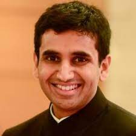
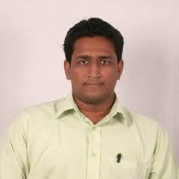
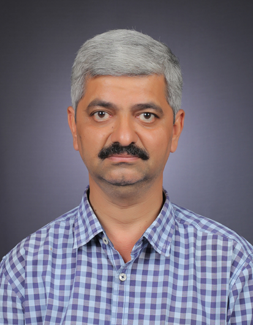
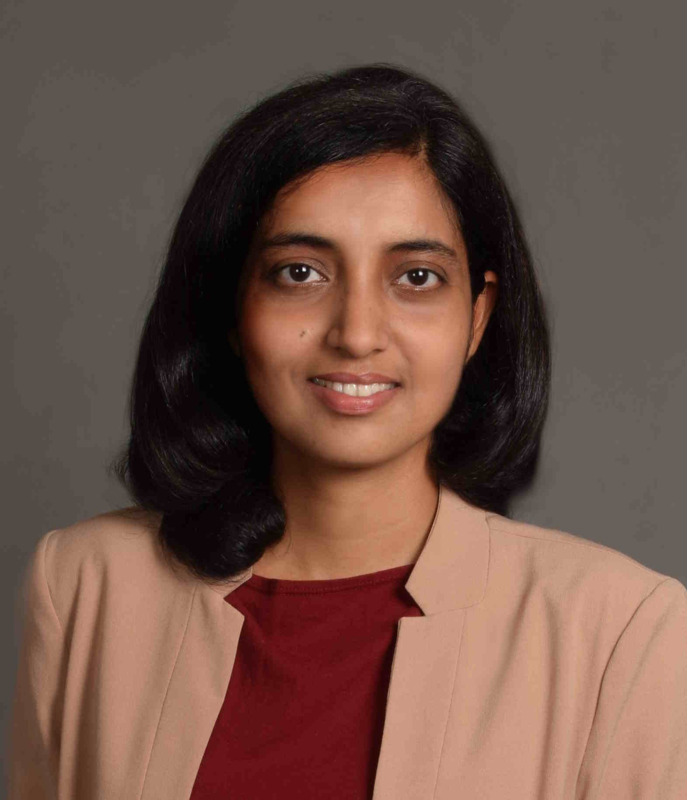
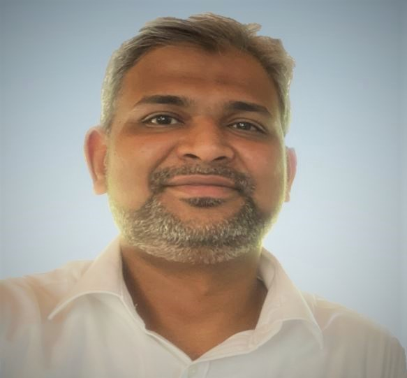
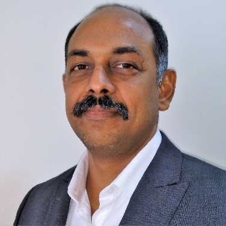
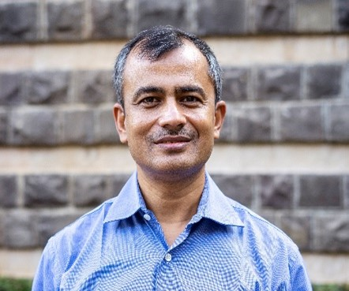
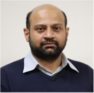

Reimagining Future Enterprises and Society using Digital Twin
February 22nd, 2024. IIIT Bangalore, India, co-located with ISEC 2024
In the dynamic landscape of technological advancements, the Digital Twin concept is emerging as a powerful tool with the potential to transform traditional decision-making approaches for diverse and complex systems. Technically, it offers a paradigm shift in our understanding and resolution of intricate problems by effectively mirroring real-world entities. This enables us to comprehend their behaviors through simulation, anticipate anomalies for outlier environmental conditions, and derive evidence-driven solutions. While proven effective in physical and cyber-physical systems, its untapped potential lies in the realm of techno-socio-economic systems that operate in dynamic and uncertain environments. The use of such technology in informed decision-making is significant for enterprises and society, as modern businesses and societal structures demand innovative solutions that transcend conventional approaches. With the growing need, the global digital twin market is expected to expand from $11.51 billion in 2023 to $137.67 billion by 2030, impacting domains such as manufacturing, healthcare, sustainability, smart cities, and more. However, realizing this vast business potential hinges on advancing technological capabilities and fostering innovation. This workshop aims to discuss the existing landscape of digital twins and explore uncharted territory by harnessing the latent potential of Digital Twins within techno-socio-economic systems.
Objectives
This workshop aims to convene prominent researchers and practitioners from diverse fields to collectively delve into the challenges associated with harnessing digital twin technologies for techno-socio-economic systems, with the goal of enhancing future enterprises and society. The primary focus is to foster knowledge exchange, share innovative approaches, and explore concepts that address the unique complexities of integrating digital twins into such intricate systems.
Schedule
Venue: Room 4 (Floor: 2, No: R307) , IIIT, Bangalore |
|
|
9:00 AM to 09:15 AM |
Opening Remarks & Context setting, Souvik Barat & Varun Ramamohan |
|
09:15 AM to 9:50 AM |
Dr. Aditya A. Paranjape, TCS Research Pune Title: Digital Twins for Control and Optimization. |
|
9:50 AM to 10:25 AM |
Dr. Supratim Ghosh Title: Efficient and sustainable last mile using artificial intelligence. |
|
10:25 AM to 11:00 AM |
Prof. Narayan Marathe , Walchand College of Engineering, Sangli Title: Digital Twin for Proposed River Interconnection Project in India. |
|
11:00 AM to 11:30 AM: Tea Break |
|
|
11:30 AM to 12:05 PM |
Dr. Neha Karanjkar, Indian Institute of Technology Goa Title: Open simulation frameworks for building scalable digital twins. |
|
12:05 AM to 12:40 PM |
Mohammad Ghouse Mohideen & Gopalan Govindrajen, Dell Technologies Title: Dell Technologies Strategy for Digital Twins |
|
12:40 PM to 1.00 PM |
Closing Remarks , Souvik Barat & Varun Ramamohan |
|
1.00 PM to 2:00 PM: Lunch |
|
Invited Speakers
-
Dr Aditya Paranjape , Senior Scientist, TCS Research, Pune India
Aditya A. Paranjape received B.Tech and M.Tech in Aerospace Engineering from the Indian Institute of Technology (IIT) Bombay in 2007, and PhD in Aerospace Engineering from the University of Illinois at Urbana-Champaign in 2011. He is a Senior Scientist at TCS Research, Honorary Lecturer at Imperial College London and Visiting Associate Professor at IIT Bombay. His research interests are centred around flight physics, control systems, robotics, and multi-agent systems.
Title: Digital Twins for Control and OptimizationAbstract: Model-based control and optimization techniques have matured over the past fifty years and have been deployed on real-world systems of ever-increasing complexity. In parallel, model-free control techniques evolved under the umbrellas of reinforcement learning (RL) and adaptive control, and have been a subject of growing interest, partly because of a shared lineage with the field of artificial intelligence, although their practical use has been somewhat limited. Although the two approaches may seem orthogonal at first sight, they can be brought together gainfully for a broad range of practical problems wherein a nominal model is readily available in the form of a digital twin or a high-fidelity simulator, but the underlying system is prone to modelling and environmental uncertainties. I will illustrate this paradigm using examples based on business problems that came our way at TCS Research. The examples will demonstrate not only the utility of the digital twin as a control design aid but also the challenges associated with developing one for control.
-
Dr Supratim Ghosh , Senior Data Scientist
Supratim Ghosh is currently a Senior Data Scientist working on applications of Artificial Intelligence in Supply Chain Operations. He was a Research Scientist at TCS Research where he worked on solving challenging problems in transportation and supply chain such as vehicle routing, scheduling and planning, optimizing sorting, and 3-D bin packing using various techniques from machine learning and optimization. He holds a PhD and MS in Electrical Engineering, and an MA in Mathematics from the Pennsylvania State University, USA. He has also held research and faculty positions at Singapore University of Technology and Design, and University of Michigan, Ann Arbor.
Title: Efficient and sustainable last mile using artificial intelligence.Abstract: Last mile has typically been responsible for 50% of the costs for transportation of goods, making it the most expensive leg of transportation. In recent times, there has been increased push towards reducing costs as well as the carbon footprint of last mile transportation. In this talk, I will demonstrate how a combination of various techniques such as meta-heuristics, optimization, and reinforcement learning can be used to design efficient and scalable solutions to the vehicle routing and electric vehicle routing problems, which are core to last mile transportation.
-
Prof. Narayan Marathe , Associate Professor, Walchand College of Engineering, Sangli
Narayan Marathe who holds a Bachelors and Masters Degree in Electronics Engineering is having a teaching experience of 30+ years in Walchand College of Engineering, Sangli where he is presently Associate Professor in Electronics. He is actively involved in academic administration and member of College level NEP-2020 Implementation Task Force. He is also member of Maharashtra State Level Steering Committee of NEP-2020 at School Level. He had been a Member and Chairman of Adhoc Board in Industrial Electronics at Shivaji University, Kolhapur. He is very much keen on Societal applications of technology.
Title: Digital Twin for Proposed River Interconnection Project in India.Abstract: Water Resource Management has been a major area of concern in India with Floods and Draughts happening simultaneously looking at the multidimensional diversity in the region. Even though the idea of River Interconnection Project has been doing the rounds ever since independence, it's cost effectiveness and exact outcome were not easy to be predicted before. Digital Twin is a theme which finds its perfect application before taking up such a gigantic task. The talk will cover an Overall Problem Statement, various approaches in dealing with the issue like top-down or bottom-up or on basinwise phased implementation. Since the task is voluminous, it is major application of Big Data and there cannot be a unique solution. The talk stresses the need for multiple solutions and there proposed outcomes and testing them on multiple data sets.
-
Dr Neha Karanjkar , Assistant Professor, Indian Institute of Technology Goa
Dr. Neha Karanjkar is an Assistant Professor in Computer Science and Engineering at IIT Goa. She obtained her M.Tech and Ph.D degrees from the Electrical Engineering department at IIT Bombay. Before joining IIT Goa, she has worked as a Postdoctoral fellow at the Robert Bosch Centre for Cyber-Physical Systems at IISc Bangalore and as a research associate at IIT Bombay on the development of the 'Ajit' indigenous microprocessor. Her research interests are in modeling, simulation and optimization of Discrete-event systems in application areas such as computer system design, digital twins in manufacturing and retail. Her current focus is on building scalable simulation frameworks for discrete-event and mixed discrete-continuous systems. She currently serves as the Chair of the ACM Goa professional chapter and a member of the ACM India Education Committee.
Title: Open simulation frameworks for building scalable digital twins.Abstract: Digital Twins are becoming pervasive across many industries. For application domains such as manufacturing, a key challenge in their effective deployment is the development of open frameworks for modeling and scalable simulation of hybrid systems. These are systems consisting of interacting components modeled using different paradigms. Choosing the right modeling paradigm for each sub-system, and simulating the entire system at scale can be challenging. In this talk, I will present an overview of multiple modeling paradigms, with a focus on the challenges specific to digital twins and how simulation can be performed in each case. I will then discuss simulation approaches for hybrid systems and present our work in parallel cycle-based simulation and towards the development of a Python framework for hybrid (mixed discrete-event and continuous) simulation for digital twins.
-
Mohammad Ghouse Mohideen , Advisory Architect at Dell Technologies
Mohammad Ghouse Mohideen aka. MG is an Advisory Architect at Dell Technologies, leading global alliances partner management from the technical standpoint. Besides his day job, MG co-leads an “Open Innovation Lab” which is part of the Office of CTO Research Office at Dell. He is a CTO Ambassador and APJ PreSales lead for Energy & Utilities industry. Prior to Dell, He led the Technology Innovation Centre for L&T Smart World and was also associated with Tata Power & Wartsila India Limited as a Smart Grid specialist. An electrical & electronics engineer, MBA graduate and TOGAF9 certified Global Enterprise Architect by Academic background. MG is an active speaker at tech forums, enjoys hobby drone piloting and long drive with family during the weekends.
Gopalan Govindrajen , Advisory Systems Engineer, Dell Technologies
Govind serves as an Advisory Systems Engineer for the India OEM team, based out of Bangalore, India. He also co-leads the Retail & Manufacturing vertical practice for APJ. As an ASE, Govind leads technical discussions with his customers and articulates cutting-edge technological innovations that Dell Technologies has to offer for them. In this role, as a credible Subject Matter Expert, he helps Dell’s customers in their Digital Transformation journey by providing all necessary Pre-Sales technical consultancy, including but not limited to White Boarding, arrange PoCs, customer QBRs, access to Dell PG teams, Application Validation, create RFPs along with clients. Was the Storage SE/BDM for the India OEM team till Fy’22. He is a working member of the Digital Twin Consortium. In his 16th years of working in Dell, Govind has worn quite a few hats in Dell, including National Alliances, Systems Consultant, Storage SE etc. Before joining Dell India, Govind spend close to 2 years, working for a Dell partner in East Africa, based out of Kampala, Ug. He oversaw the IT sales for EA countries, including Ug, Ky, Tz & Rw. Govind is an Instrumentation Engineer with an MBA in International Business. He is a regular speaker in webinars, Customer Advisory Council sessions, EBC discussions etc. Govind has won a quite a few awards in his career in Dell. .
Title: Dell Technologies Strategy for Digital Twins.
Venue & Registration
Please check out the conference page for workshop location and need to register for the conference.
Organizers
Dr Souvik Barat , Principal scientist, Tata Consultancy Services Research India
Souvik is a distinguished principal scientist at Tata Consultancy Services Research India, visiting researcher at Middlesex University London and adjunct professor at Walchand College of Engineering, Sangli. He has 25 years of experience in industrial research and his research interests include Digital Twin technology, Modelling and simulation of complex systems, Model Driven Engineering, Software Product Lines, Business Process Management and Reinforcement Learning. .
Dr Varun Ramamohan , Associate Professor, Indian Institute of Technology Delhi
Varun is an Associate Professor in the Department of Mechanical Engineering at the Indian Institute of Technology Delhi. He has more than 12 years of experience in simulation (discrete-event, agent-based, and Monte Carlo) and simulation methodology (metamodeling, model simplification), simulation optimization and probabilistic modeling. He has applied these techniques to problems in healthcare delivery, health economics, military operations and manufacturing. .